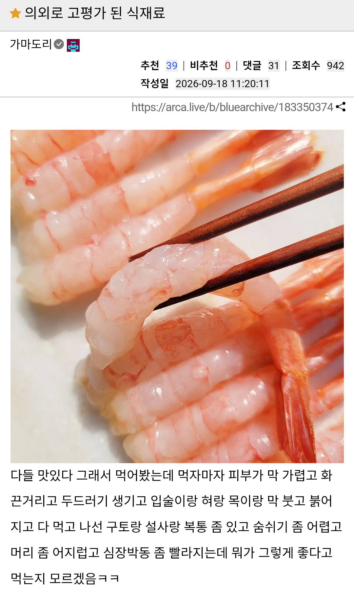

164 · 25 · 20 시간 전 · 원문

수집 당시 댓글 25개
위스키봉봉 · 19 시간 전
압도적인미드라인 · 19 시간 전
어렸을땐 안그랬는데
30 중반즈음 되니깐 새우 꽃게먹으면 슬슬 닿는부위 붓는 느낌이더라
이제 간장게장 놔줄까봐
↳ 답글 · 뉴비곰 · 17 시간 전
갑각류가 어릴때는 이상없다가 성장하면서 생기는 경우가 꽤 있나봄. 우리 어머니 친구분도 젊었을때는 갑각류 먹어도 문제 없었는데 나이 드시면서 생겼다 하심.
좀 찾아보니까 집먼지 진드기를 자면서 많이 흡입하는 경우 갑각류랑 비슷한 단백질이 있어서 성인되고나서 갑각류 알레르기가 생기는 사례가 꽤 있다고하는데?
↳ 답글 · 오뜨 · 17 시간 전
어릴때부터 지금까지 갑각류를 젤 좋아하는데, 이런 썰 볼때마다 무섭다... 어느날 갑자기 생길까봐
↳ 답글 · 권주가 · 16 시간 전
나 새우 어릴떄 잘 먹다가 초4? 그쯤 새우를 먹으면 입술이 붓고 간지럽더라고 그래서 한동안 거의 안 먹었는데 막 기도가 부을정도로 심한건아니고 입술만 가려운 정도라 가끔은 그냥 먹기도 함, 그러다가 한 성인쯤되니까 더이상 알러지 반응 없더라
↳ 답글 · 달에서캠핑하고싶다 · 16 시간 전
오 나도그런데 그래도 익힌건 괜찮더라
↳ 답글 · 토매 · 13 시간 전
나도 36살쯤 국수 먹다가 안에 있던 새우 2마리 먹고 눈 팅팅 붓고 가려워서 죽는줄알았다
이젠 국밥에 넣는 새우젓도 살짝 느낌있어 씹
↳ 답글 · 하슬라 · 12 시간 전
난 반대로 어릴 때 있었다 크고 없어졌는데
게 먹으면 얼굴 목주위로 두드러기 났었음
뭐 없어진게 아닐 수도 있긴함ㅋㅋㅋㅋ
↳ 답글 · NoSugar · 7 시간 전
나는 어렸을때 생새우 먹다가 알러지와서 나중에는 간장개장도 못먹음.
익혀먹으면 상관없음
알러지라는게 일정 단백질에 대한 반응인데 열변성하면 반응없을수도 있음 그래서 난 익혀먹으면 괜찮음. ㅋㅋ
새우의 경우는 동남아 쪽에서 오는 새우가 알러지 많이 만드는데 저 칵테일 새우가 그쪽게 많긴함.
암튼 산지에 따라서도 알러지 여부가 갈리기도함. ㅋㅋ
↳ 답글 · Young男 · 4 시간 전
내가 세상에서 제일 좋아하는 음료 중 하나가 검은콩우유였는데
31살쯤 되고나서 두유 먹고 개씹알러지반응 나더라..
잘가라 검은콩 우유...
오이쉬 · 19 시간 전
새우깡 쳐다만 봐도 죽겠네
오한복통구토살려줘 · 19 시간 전
새콤달콤한 맛으로 먹는것
보지거머리 · 19 시간 전
저거 ㅈ지랄임 나도 갑각 알레르기 있는데 미각 사라지기 전에 간장게장 몇 입 그 맛 느낄라고 먹는다
알러지약 먹고 게장 먹었음ㅋㅋㅋ
Santa · 18 시간 전
새퀴벌레
노들나루 · 18 시간 전
팝시클
음머 · 17 시간 전
도로보 · 17 시간 전
새우 알러지 있는데 저거 아무리 먹어도 느낌도 안오더라
유칼립투스탈곡기 · 17 시간 전
즐기시게냅둬 · 16 시간 전
그맛으로 먹는건데 ㅉㅉ
싼디스크 · 15 시간 전
알러지잖아
↳ 답글 · joykala · 14 시간 전
어허 몸이 싸해지면서 얼굴이 붓고 기침이 나오는 맛없는 음식이야
허리디스커 · 13 시간 전
산지직송서비스 · 12 시간 전
천국에 가고싶지 않다면 즉시 허벅지에 에피네프린 주사기를 사용하세요
스팀 · 10 시간 전
댓글
수집 당시 댓글 25개
위스키봉봉 · 19 시간 전
압도적인미드라인 · 19 시간 전
어렸을땐 안그랬는데
30 중반즈음 되니깐 새우 꽃게먹으면 슬슬 닿는부위 붓는 느낌이더라
이제 간장게장 놔줄까봐
· 뉴비곰 · 17 시간 전
갑각류가 어릴때는 이상없다가 성장하면서 생기는 경우가 꽤 있나봄. 우리 어머니 친구분도 젊었을때는 갑각류 먹어도 문제 없었는데 나이 드시면서 생겼다 하심.
좀 찾아보니까 집먼지 진드기를 자면서 많이 흡입하는 경우 갑각류랑 비슷한 단백질이 있어서 성인되고나서 갑각류 알레르기가 생기는 사례가 꽤 있다고하는데?
· 오뜨 · 17 시간 전
어릴때부터 지금까지 갑각류를 젤 좋아하는데, 이런 썰 볼때마다 무섭다... 어느날 갑자기 생길까봐
· 권주가 · 16 시간 전
나 새우 어릴떄 잘 먹다가 초4? 그쯤 새우를 먹으면 입술이 붓고 간지럽더라고 그래서 한동안 거의 안 먹었는데 막 기도가 부을정도로 심한건아니고 입술만 가려운 정도라 가끔은 그냥 먹기도 함, 그러다가 한 성인쯤되니까 더이상 알러지 반응 없더라
· 달에서캠핑하고싶다 · 16 시간 전
오 나도그런데 그래도 익힌건 괜찮더라
· 토매 · 13 시간 전
나도 36살쯤 국수 먹다가 안에 있던 새우 2마리 먹고 눈 팅팅 붓고 가려워서 죽는줄알았다
이젠 국밥에 넣는 새우젓도 살짝 느낌있어 씹
· 하슬라 · 12 시간 전
난 반대로 어릴 때 있었다 크고 없어졌는데
게 먹으면 얼굴 목주위로 두드러기 났었음
뭐 없어진게 아닐 수도 있긴함ㅋㅋㅋㅋ
· NoSugar · 7 시간 전
나는 어렸을때 생새우 먹다가 알러지와서 나중에는 간장개장도 못먹음.
익혀먹으면 상관없음
알러지라는게 일정 단백질에 대한 반응인데 열변성하면 반응없을수도 있음 그래서 난 익혀먹으면 괜찮음. ㅋㅋ
새우의 경우는 동남아 쪽에서 오는 새우가 알러지 많이 만드는데 저 칵테일 새우가 그쪽게 많긴함.
암튼 산지에 따라서도 알러지 여부가 갈리기도함. ㅋㅋ
· Young男 · 4 시간 전
내가 세상에서 제일 좋아하는 음료 중 하나가 검은콩우유였는데
31살쯤 되고나서 두유 먹고 개씹알러지반응 나더라..
잘가라 검은콩 우유...
오이쉬 · 19 시간 전
새우깡 쳐다만 봐도 죽겠네
오한복통구토살려줘 · 19 시간 전
새콤달콤한 맛으로 먹는것
보지거머리 · 19 시간 전
저거 ㅈ지랄임 나도 갑각 알레르기 있는데 미각 사라지기 전에 간장게장 몇 입 그 맛 느낄라고 먹는다
· 하슬라 · 12 시간 전
알러지약 먹고 게장 먹었음ㅋㅋㅋ
Santa · 18 시간 전
새퀴벌레
노들나루 · 18 시간 전
팝시클
음머 · 17 시간 전
도로보 · 17 시간 전
새우 알러지 있는데 저거 아무리 먹어도 느낌도 안오더라
유칼립투스탈곡기 · 17 시간 전
즐기시게냅둬 · 16 시간 전
그맛으로 먹는건데 ㅉㅉ
싼디스크 · 15 시간 전
알러지잖아
· joykala · 14 시간 전
어허 몸이 싸해지면서 얼굴이 붓고 기침이 나오는 맛없는 음식이야
허리디스커 · 13 시간 전
산지직송서비스 · 12 시간 전
천국에 가고싶지 않다면 즉시 허벅지에 에피네프린 주사기를 사용하세요
스팀 · 10 시간 전